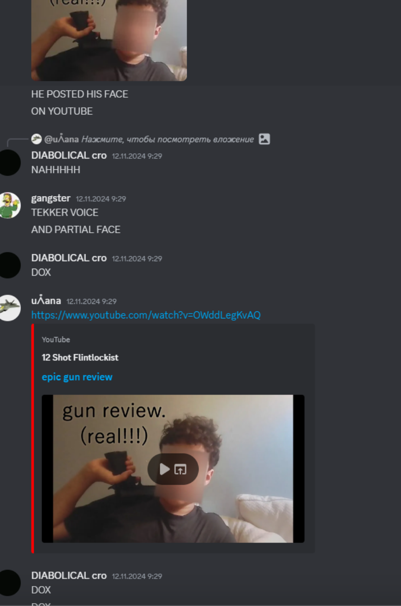

Harassment group hunts down Build Island ex-Modkit dev, Tekker01 for his NSFW art
Published on: Monday, 4th November 2024
Published by:  Eunoia Studios (StealthTrooper36), Edited by NachosandChipsYAY
Eunoia Studios (StealthTrooper36), Edited by NachosandChipsYAY
On the 4th of November, NachosAndChipsYAY, Lokaspokas and later on StealthTrooper36 joined the Waterloo at Home server and spammed “@tekker01 has @lokaspokas been harassing you lately?”, they were all immediately muted. Later on, Nachos, and Stealth together dumped evidence of Tekk’s horrific NSFW deviantart imagery (censored of course) in the Waterloo general chat, to which then they sent the head-mod a collection containing said NSFW imagery, which MakelisLT helped supply. This led to tekk being banned.
News of this event quickly spread around Build Island, and a couple of people like cromerr and uganatino_alt formed a group to find all the servers that tekk is in and have him banned immediately, eradicating him off the internet.
after i realised that tekker01 may be in other servers i began looking for one till i found a server called "Camen at home" where tekker01 was i invited voided123453 to troll tekker but he started to reply back to voided that he should find other hobbies in life, after that i told cromerrr he was in that server and cromerrr began a raid on it with realbritishinit (and voided joined it a little eariler) the entire chat is filled with call out of tekker being fart addict, voided changed his mind and became on the side of tekker telling us that this is isn't joke this is bullying.
After the chats, tekker01 decided to quit the server or either way got banned
This group has received criticism from many due to their actions being considered as plain harassment. The group was originally a chatting group until the Waterloo ban and members chose to change it up, the only people who are actually involved in finding tekker’s servers are cromerrr, realbritishinnit and uganatino_alt and also due to this worrying screenshot.
Cromerrr has a history of doxxing attempts and has been banned from the BI Discord for it, in the past he was banned for attempting to cookie log an ex-moderator, andreasofia8, (known as tuppernip).
After tekk’s ban in WOH, the group found another server called “Camden at Home” which is affiliated with the Waterloo at Home group, they went in, and they started rage-baiting and annoying tekk, then they spammed pinged him with his NSFW/QSFW commissions. Members of the server expressed their feelings about tekker being harassed and told the Build Islanders that they should grow up.
He stated that he was being “blackmailed” which is utter bullshit.
Definition of blackmail
the action, treated as a criminal offence, of demanding payment or another benefit from someone in return for not revealing compromising or damaging information about them.
"they were acquitted of charges of blackmail" source: oxford languages
Although what the group was doing is wrong, it does not fall under blackmail. They were harassing him, not extorting him.
TL;DR:
Tekk’s been harassed by some people who have a pretty bad track record and he’s been followed all around Discord. No party in this is innocent.